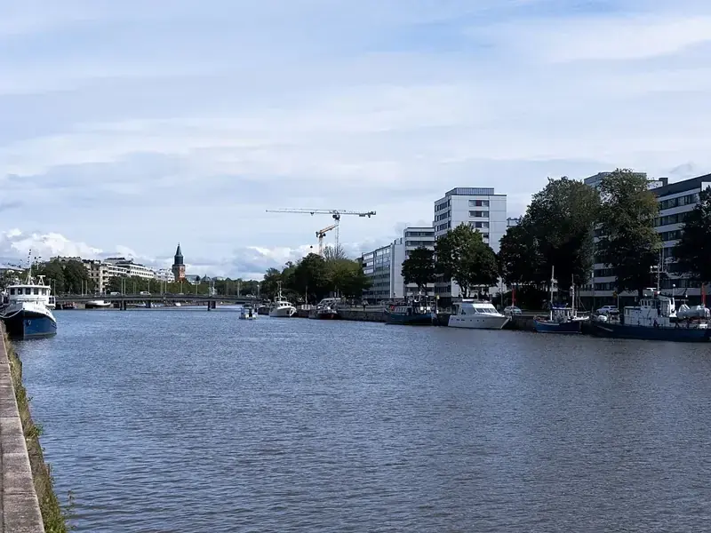
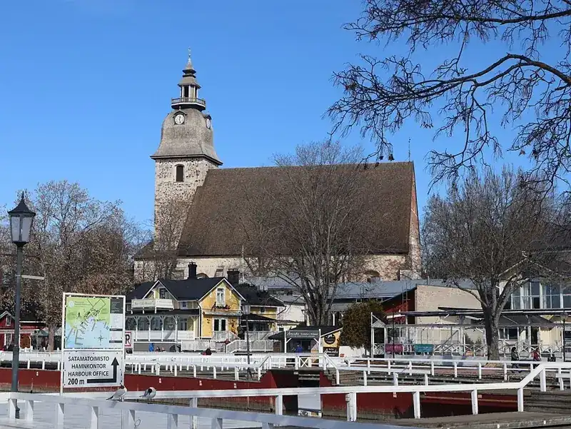
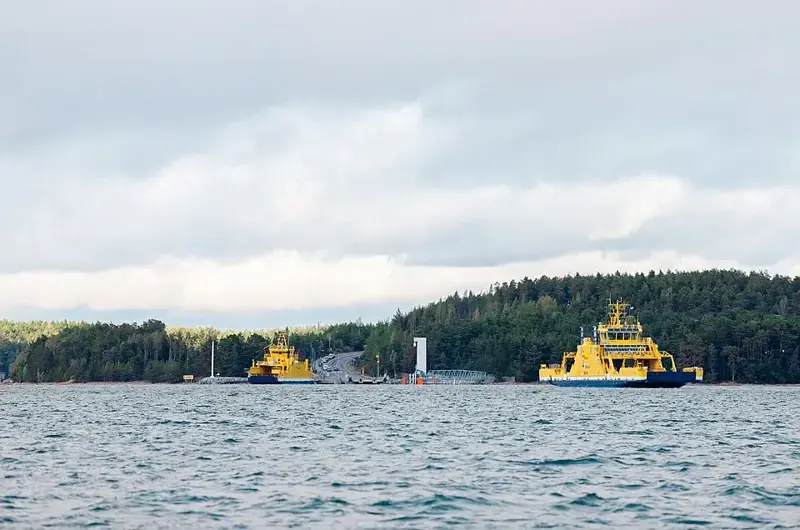
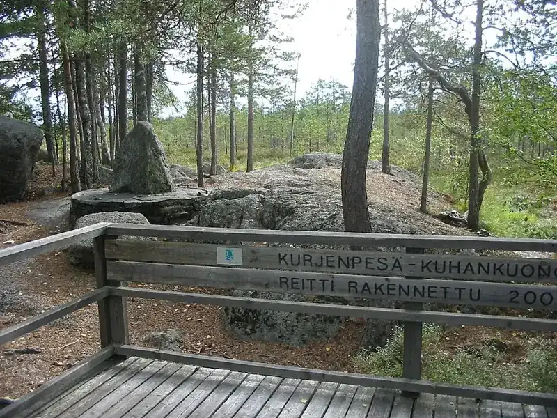

Varsinais-Suomi
Varsinais-Suomessa saaristo, historialliset kaupungit ja maaseudun kylät kutsuvat matkalle. Tutustu Turkuun, saaristoreitteihin ja rannikon nähtävyyksiin.
Luonto ja retkeily
🏛️Nähtävyydet ja kulttuuri
🚐Leirintäalueet ja matkaparkit
☕Kahvilat ja ravintolat
Varsinais-Suomen kunnat
Varsinais-Suomen parhaat käyntikohteet

Turku
Tuomiokirkon ympäristöä, Aurajoen rantoja ja kaupunkikulttuuria.

Naantali
Vanhan kaupungin tunnelmaa ja merellisiä pysähdyksiä.

Saariston rengastie
Saarten, kylien ja merimaisemien reitti autolla tai pyörällä.

Kurjenrahka
Suomaisemia, metsäpolkuja ja Kuhankuonon rajakivi.
Kaupungeista saaristoon
Reitit ja kohdeoppaat
Saariston rengastie Parainen ja saaristokylät Kemiönsaari Naantali ja lasten kohteet Salo ja seudun retket Paimio
Saaristossa reitti voi sisältää lauttoja ja losseja. Tarkista liikennöintikausi, aikataulut ja mahdolliset varaukset ennen lähtöä. Avaa saariston reittiopas →
Suunnittele oma matkasi
Kuvien tekijät ja käyttöoikeudet
- Turku: Christian David · CC BY-SA 4.0 · Kuvan lähde. Kuvakoko pienennetty, rajaus kortin mukaan.
- Naantali: Jukka Laitinen · CC BY-SA 3.0 · Kuvan lähde. Kuvakoko pienennetty, rajaus kortin mukaan.
- Saariston rengastie: Sofia Ek · CC BY-SA 4.0 · Kuvan lähde. Kuvakoko pienennetty, rajaus kortin mukaan.
- Kurjenrahka: Urjanhai · CC BY-SA 3.0 · Kuvan lähde. Kuvakoko pienennetty, rajaus kortin mukaan.